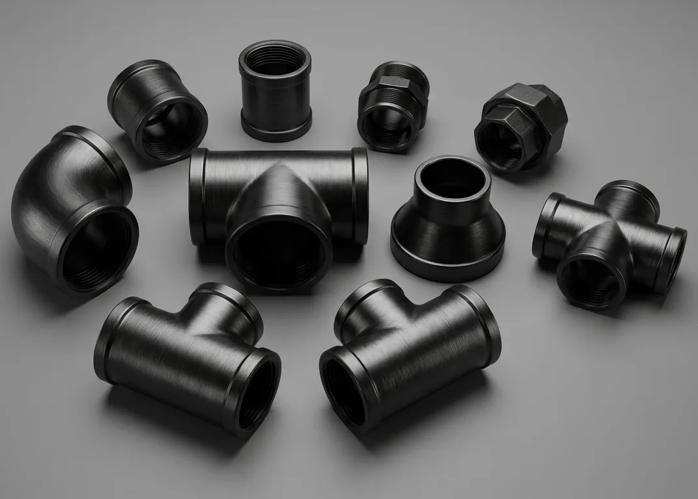

Gururaj Infradesigns is a trusted ASTM A234 WPB Pipe Fittings Manufacturer and Supplier in India, offering carbon steel elbows, tees, reducers, pipe caps, stub ends, and crosses for oil & gas, petrochemical, power generation, water treatment, and industrial piping applications.
ASTM A234 WPB Pipe Fittings are among the most widely used carbon steel piping components for low and moderate temperature service applications. Known for their strength, durability, and excellent weldability, these fittings are extensively used in oil & gas, power generation, petrochemical, and process industries. Gururaj Infradesigns is a trusted ASTM A234 WPB Pipe Fittings Manufacturer in India, supplying high-quality fittings designed to meet demanding industrial requirements.
Our product range includes elbows, tees, reducers, pipe caps, stub ends, and crosses manufactured in accordance with ASTM and ASME standards. These fittings are widely preferred for industrial piping systems that require reliable mechanical performance, ease of fabrication, and long service life.

ASTM A234 WPB is a carbon steel material specification covering wrought buttweld fittings intended for pressure piping and moderate-temperature service. The grade is widely recognized for its excellent combination of strength, toughness, and weldability, making it one of the most commonly specified materials in industrial piping systems. As part of the broader range of Carbon Steel Pipe Fittings, ASTM A234 WPB remains a preferred choice for general process and utility piping applications.
ASTM A234 WPB Pipe Fittings are suitable for transporting steam, water, oil, gas, and various industrial fluids. Their cost-effectiveness and dependable performance make them widely used across industrial facilities, infrastructure projects, and process plants requiring reliable piping components.
| Parameter | Details |
|---|---|
| Material Grade | ASTM A234 WPB |
| Product Types | Elbow, Tee, Reducer, Pipe Cap, Stub End, Cross |
| Standards | ASTM A234 / ASME B16.9 |
| Size Range | ½" NB to 48" NB |
| Schedule Range | SCH 10 to SCH XXS |
| Manufacturing Type | Seamless & Welded |
| Connection Type | Buttweld |
| Testing | PMI, Hydro Test, Visual Inspection |
| Certification | EN 10204 3.1 / MTC Available |
ASTM A234 WPB Pipe Fittings offer excellent weldability, making installation and fabrication easier across various industrial piping systems. This helps reduce project time and simplifies maintenance activities.
These fittings provide dependable strength and toughness for low and moderate temperature applications. Their mechanical properties help maintain piping system integrity under operating pressures.
Compared to alloy and stainless steel alternatives, ASTM A234 WPB Pipe Fittings provide an economical option while delivering reliable performance for general industrial service.
The ASTM A234 WPB specification is widely accepted across industries and engineering projects. This makes sourcing, installation, and replacement easier throughout the product lifecycle.
When properly installed and maintained, these fittings offer excellent durability and dependable long-term performance in process and utility piping systems.
| Element | Composition (%) |
|---|---|
| Carbon | Max 0.30 |
| Manganese | 0.29 – 1.06 |
| Phosphorus | Max 0.050 |
| Sulfur | Max 0.058 |
| Silicon | Min 0.10 |
| Chromium | Max 0.40 |
| Nickel | Max 0.40 |
| Molybdenum | Max 0.15 |
| Copper | Max 0.40 |
| Property | Value |
|---|---|
| Tensile Strength | 415 MPa Min |
| Yield Strength | 240 MPa Min |
| Elongation | 22% Min |
| Hardness | As Per ASTM Specification |
These fittings are widely used in upstream, midstream, and downstream facilities for transporting oil, gas, and process fluids through piping networks.
ASTM A234 WPB Pipe Fittings support process piping systems handling various hydrocarbons and industrial fluids within petrochemical facilities.
Power plants utilize these fittings in steam, condensate, and utility piping systems where dependable mechanical performance is required.
The fittings are commonly used in industrial water treatment and utility piping systems due to their durability and cost-effectiveness.
| Property | ASTM A234 WPB | ASTM A860 WPHY 42 | ASTM A860 WPHY 52 |
|---|---|---|---|
| Primary Application | General Process Piping | Pipeline Systems | Critical Pipeline Systems |
| Strength Level | Standard | Higher | Highest |
| Pressure Handling | Moderate | High | Very High |
| Weldability | Excellent | Excellent | Excellent |
| Fabrication Ease | Excellent | Good | Good |
| Impact Resistance | Good | Better | Excellent |
| Operating Conditions | Standard Industrial Service | Demanding Service | Severe Service Conditions |
| Cost Consideration | Most Economical | Moderate | Premium |
| Industry Usage | Refineries, Utilities | Oil & Gas Pipelines | High-Pressure Pipelines |
| Best Choice For | General Industrial Projects | Strength-Critical Projects | Maximum Reliability Applications |
ASTM A234 WPB Pipe Fittings are widely used where cost-effectiveness, weldability, and dependable performance are the primary requirements. For projects requiring higher strength and enhanced pipeline performance, industries often select ASTM A860 WPHY 42 Pipe Fittings, while ASTM A860 WPHY 52 Pipe Fittings are preferred for critical high-pressure pipeline applications.
| Finish | Benefits |
|---|---|
| Black Painted | Protection during storage and transportation |
| Anti-Rust Oil Coated | Helps prevent surface corrosion |
| Shot Blasted | Improves surface cleanliness |
| Bare Finish | Suitable for fabrication and welding applications |
Proper surface treatment helps maintain product quality and improves handling during transportation, storage, and installation.
Gururaj Infradesigns supplies ASTM A234 WPB Pipe Fittings in a wide range of sizes and specifications to support industrial piping projects. Our products are supplied to EPC contractors, fabricators, engineering companies, and industrial buyers seeking reliable carbon steel piping solutions.
As a trusted supplier, we focus on consistent quality, timely deliveries, and dependable customer support to meet project schedules and operational requirements.
At Gururaj Infradesigns, quality remains an important part of our manufacturing and supply process. All pipe fittings undergo inspection for dimensional accuracy, workmanship, and material compliance before dispatch.
As an ISO Certified Company, we are committed to supplying reliable piping components that meet industrial expectations for quality, consistency, and performance.
Selecting the right carbon steel pipe fitting grade depends on factors such as operating pressure, temperature, fluid type, and project specifications. Choosing the correct material helps ensure reliable performance, safety, and long service life. Our team can assist in selecting the most suitable fitting grade, size, and specification based on your application requirements. We work closely with engineers, EPC contractors, fabricators, and industrial buyers to provide practical guidance and dependable piping solutions.